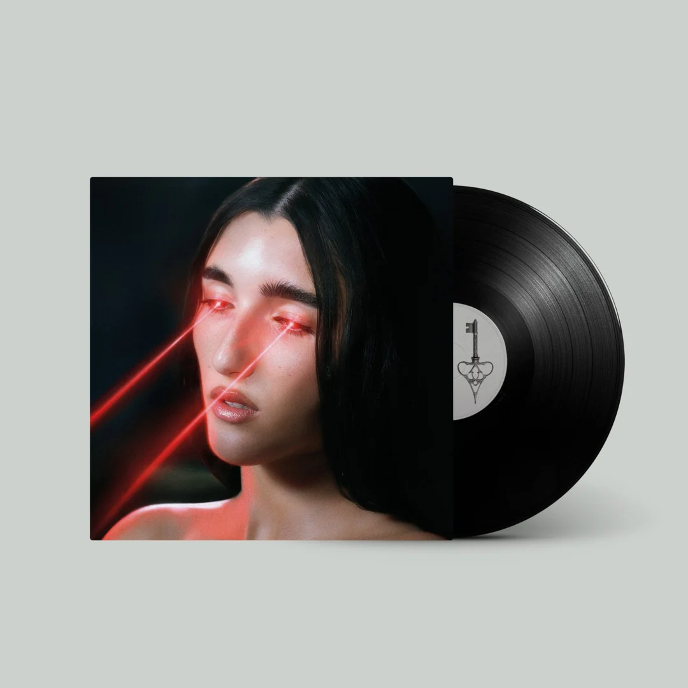

<html lang="es"></html>
<head>
    <meta charset="UTF-8">
    <meta name="viewport" content="width=device-width, initial-scale=1.0">
    <title>Judeline-Bodhiria</title>
    <link rel="icon" type="image/x-icon" href="/MEDIA/rec.ico">
    <link rel="stylesheet" href="style.css">
</head>
<body>
    <header>
        <a href="index.html">
            
        </a>
        <h1>Bodhiria</h1>
    </header>
    <main class="detalle-vinilo">
        
        <div class="detalle-info">
            <h2>Bodhiria</h2>
            <p><strong>180 Gramos</strong></p>
            <p><a href="https://open.spotify.com/intl-es/artist/1H6X7yhnXZg73f9bssaj1Q" target="_blank">Judeline</a> (Artista, Colaborador) | Formato: <strong>Disco de vinilo</strong></p>
            <p>⭐ 4,6 - 85 valoraciones</p>
            <p><strong>100+ comprados el mes pasado</strong></p>
            <p><strong>Precio: 19,99€</strong></p>
            <button id="btn-add-cart" class="btn-add-cart">🛒 Añadir al carrito</button>
            <p id="mensaje-anadido" class="mensaje-anadido" style="display: none;">Añadido</p>
            <p><strong>Tracklist:</strong></p>
            <ul>
                <li>bodhitale (part. Angela)</li>
                <li>INRI</li>
                <li>angelA</li>
                <li>mangata</li>
                <li>BRUJERIA!</li>
                <li>luna roja</li>
                <li>JOROPO</li>
                <li>4esquinitas</li>
                <li>4 angelitos</li>
                <li>Heavenly (part. rusowsky)</li>
                <li>zarcillos de plata</li>
                <li>Es Dios bueno o sólo es poderoso
            </ul>
            <a href="index.html">Inicio</a>
        </div>
    </main>
    <script src="carrito.js"></script>
</body>
</html>